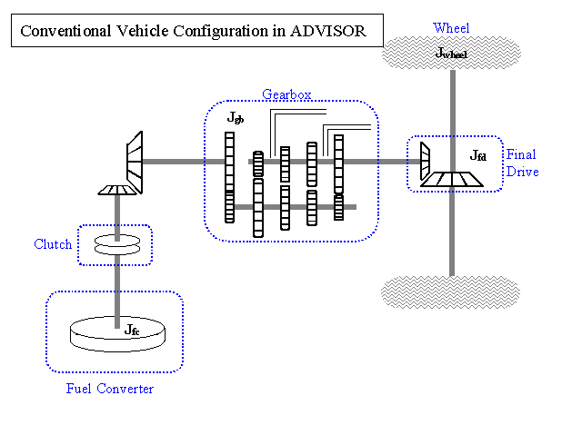
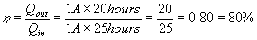
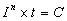
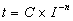
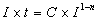

Acceleration Test:The acceleration test uses of an input cycle of a step function of 200 mph. The simulation is run with a 0.1 second time step rather than a 1 second default time step in order to more accurately predict the vehicle response. If the vehicle is a hybrid, the batteries begin at their high SOC limit. The gearbox shift delay is set to 0.2 seconds. The test results are: 0-60 mph time, 0-85 mph time, 40-60 time, maximum acceleration (ft/s2), and distance (ft) travelled in 5 seconds.
ADVISOR:Acronym for ADvanced VehIcle SimulatOR.
Auto-Size routine:The auto-size routine takes the selected vehicle and adjusts vehicle parameters until it meets acceleration and gradeability goals. The parameters it alters are the fuel converter torque scale (fc_trq_scale), the motor controller torque scale (mc_trq_scale), the number of energy storage system modules–all of which affect the vehicle mass. The minimum torque scale for the fuel converter is set so that its peak power output is 40 kW. The number of battery modules is limited to yield a maximum nominal voltage of 480 V. The minimum battery voltage is determined by the voltage limits of the motor. The performance targets are maintaining atleast a 6% grade at 55 mph, and obtaining less than a 12 second 0-60 mph time, 23.4 second 0-85 mph time, and 5.3 second 40-60 mph time.
Capacity (of a battery): The total amount of charge, typically in Ampere-hours (Ah), that can be withdrawn from a fully charged battery under specified conditions (from SAE J1715). Sometimes, this value is referred to as Cn, which is the capacity at a particular discharge rate such that the battery is depleted in n hours. The available capacity of a battery at a constant current is a function of the rate at which it is discharged. This concept is explained in greater detail in the ADVISOR glossary entry for state of charge (SOC). The maximum capacity of the battery, evaluated at C5 for example, can be drawn from the battery, given that the current is reduced so as to not drop below the minimum operating voltage. Whether a battery can actually deliver the charge for which it is rated is also affected by the temperature at which it is discharged and the history of how the battery has been used over its lifetime. ADVISOR currently account for these temperature effects, but does not model history effects.
Conventional Drivetrain:The conventional vehicle represents a typical passenger car. It uses only a fuel converter for motive power. The default gearbox is a 5 speed. The conventional accessories are a constant mechanical power load.

Coulombic efficiency: When a battery is depleted by discharge current, it will need more charge than was taken out to fill it back up to its starting point. If you deplete a full 20 Ah battery with the current at which it is rated, say 1A (which would take 20 hours), and then you apply 1A to charge it back up, it will take longer than 20 hours to fully restore the charge. For instance, it might take 25 hours. Coulombic efficiency is defined as the total charge removed divided by the total charge added to replenish the charge removed. So, for our 20Ah battery example:
C/N rate: The constant current which is numerically the capacity divided by N. The result approximates the N hour rate (from SAEJ1715). The C rate is a nominal current (amperes) that is related to the capacity of the battery, where the capacity is defined at a specified discharge rate. It is common for battery manufacturers to come up with a rating for the capacity of a battery at a relatively low discharge current. A battery would probably receive a 20 Amp-hour rate if 1A of discharge current depleted a full battery in 20 hours. In this example, 1A would be the 20 hour rate, which is the N hour rate commonly used by battery manufacturers to determine a battery’s official Amp-hour rating. Rating refers to charge, or capacity (in Amp-Hours), whereas rate refers to a current, or flow charge (in Amps, which is coulombs per second).
For our 20Ah example above, other current rates would then typically be defined as mathematical multiples of this basis rating. For instance, a C/10 rate would be 2A, a C rate would be 20A, and a 5C rate would be 100A. Note that at the higher rates, the battery would have less than the 20Ah rated capacity (see [Peukert’s Equation](#Peukert’s%20Equation)), so discharging at the C rate would actually take less than one hour.
Custom Drivetrain:The custom drivetrain configuration is an advanced feature that allows the user to link a user-generated block diagram to ADVISOR. The user must identify the specific block diagram and also must activate and select the appropriate components. By default the custom_defaults_in saved vehicle uses the conventional vehicle model. By selecting custom from the drivetrain configuration menu the user will be prompted to identify the model of interest. To activate the various components simply click on the checkbox to the left of the component button and then select the desired component from the pulldown menu
CVT:Continuously Variable Transmission.
Cycle:A vehicle speed-versus-time schedule that is used to test vehicle and battery characteristics.
Drivetrain:The elements of a propulsion system (such as motor, transmission, axle, and wheels) that produce and transmit mechanical power to the dirve wheels of a vehicle.
Electric Vehicle (EV) Drivetrain: The electric vehicle components include batteries and a motor. It uses only electric motive power, and it can use the motor as a generator for capturing braking energy to be stored in the battery . The batteries begin at full charge, or an SOC of 1.0. The default gearbox is a 1 speed. The accessories are a constant electrical power load.
Fuel Cell Drivetrain:The fuel cell vehicle components include a fuel converter, batteries, and a motor. It is very similar to the series hybrid, with a fuel cell replacing the fuel converter and generator. The default gearbox is a one speed. The default control strategy is a “thermostat” where the fuel converter turns on when the SOC reaches the low set point (cs_lo_soc) and turns off when the SOC reaches the high set point (cs_hi_soc). The hybrid accessories are a constant electrical power load.
Gradeability Test: The gradeability test determines the maximum grade the vehicle is able to maintain at 55 mph. If the vehicle is not able to maintain any grade, the result will be zero. The maximum grade reported is a 10% grade. The test sets the initial vehicle speed at 55 mph and runs a short simulation for 10 seconds to observe whether or not the speed was maintained at the current grade.
ICE:Internal combustion engine. Types used in ADVISOR: SI (standard ignition) and CI (compression ignition/diesel).
Insight Drivetrain: The Insight drivetrain is a model of the Honda Insight Hybrid System. It has a version of a parallel starter alternator drivetrain.
Internal Resistance (Rint):This is a way of representing the electrical losses in a battery. When current is drawn from or injected into a battery, the voltage measured at the battery terminals will be different than the voltage that would be measured at those terminals if the battery were at rest (which is the open circuit voltage, Voc). When current is drawn from the battery, the voltage will be lower than Voc. When current is flowing into the battery, the terminal voltage will be higher than Voc.
Electrochemical and resistive components account for these voltage changes under load, and they mostly represent energy that is lost to heat. The magnitude of these losses is a function of many parameters such as the temperature, the age of the battery, the magnitude and direction of current, and the state of the battery. Also, these relationships are non-linear. One way to approximate these losses is to model the voltage drops as if they were due to simple linear resistances. ADVISOR models these resistances by using distinct SOC-dependent resistances for charging and discharging.
Motor: As modeled in ADVISOR, an electric motor takes a mechanical power request in terms of torque and speed and converts it into a pure electric power request in Watts. Types of motors used in ADVISOR: AC and PM (permanent magnet).
MPGGE: Miles per gallon gasoline equivalent. The gasoline equivalent value is calculated based on the lower heating value of gasoline (42.6 kJ/g) and the density of gasoline (749 g/l) for all vehicles. For electric vehicles the energy used is determined by integrating total power out of the energy storage system while accounting for coloumbic losses during a hypothetical recharge.
For EV: mpgge=distance/(ess_energy_out/ess_coulombic_eff)*42600*749/.264172;
%42600=lhv of fuel(J/g), 749=density of fuel(g/l), .264172gal/l
For others: mpgge=mpg_base_fuel*42600*749/fc_fuel_lhv/fc_fuel_den;
%42600=lhv of fuel(J/g), 749=density of fuel(g/l)
N hour rate: The constant current at which a fully charged battery can be completely discharged in precisely N hours.
NREL: National Renewable Energy Laboratory.
Open Circuit Voltage (Voc or OCV):The voltage measured across the terminals of a battery when there is no current flowing through the terminals is referred to as its open circuit voltage. If the battery has recently been delivering or receiving current, then the voltage will probably be in the process of settling to its eventual equilibrium. This settling process can take hours for some batteries. In ADVISOR’s battery model, we currently neglect these sorts of delays, and we assume that the battery has a Voc which is solely a function of its state of charge and not a function of time.
Parallel Drivetrain:The parallel vehicle components include an engine, batteries, and a motor. Is is named parallel because both the motor and the engine can apply torque to move the vehicle. The motor can act in reverse as a generator for braking and to charge the batteries. The default control strategy is an electric assist. The default gearbox is a 5 speed. The hybrid accessories are a constant electrical power load.
Parallel Starter/Alternator: The parallel starter/alternator vehicle components include an engine, batteries, and a motor. It is named parallel starter/alternator because the motor behaves like the starter and the alternator of a conventional vehicle. It allows for engine shutdown and restart and for minimal electric assist. It is a parallel design because both the motor and the engine can apply torque to move the vehicle. The major difference between the parallel starter/alternator design and the basic parallel design is the location of the clutch. The clutch is positioned between the gearbox and torque coupler in the parallel starter/alternator design while it is located between the torque coupler and the engine in the basic parallel design. This means that if the vehicle is moving and the clutch is engage both the engine and motor shafts must be rotating. The motor can act in reverse as a generator for braking and to charge the batteries. The default control strategy is an electric assist <Parallel.html>. The default gearbox is a 5 speed. The hybrid accessories are a constant electrical power load.
Peukert’s Equation: ADVISOR’s previous battery model used the Peukert equation to account for the observed drop in constant-discharge-current capacity with increasing discharge rate. In the new battery model, this capacity drop is maintained by imposing a lower voltage limit on the battery operation, but the full battery capacity is available. The Peukert equation below is therefore for reference only and not used in the current battery model.In batteries, for higher discharge current, I, there is generally less charge, Q, available; as the number of Amps goes up, usable Amp-Hours available from a “full” battery goes down. Peukert’s equation quantifies this effect.
The original form of the equation is:

where
I is current n is an exponent, typically useful in a range between 1.3 and 1.4 t is time, in whatever unit is appropriate. Here we use hours C is a constant coefficient (this is different from C rate) Through algebraic manipulation, we can create a form of this equation which will represent charge Q, in Ah, in terms of current I, in Amps. First, we divide both sides of Peukert’s equation by In.

then, multiplying both sides by I,

or, substituting coeff for C and exponent for 1-n yields
where
I is current, in Amps Ah is battery capacity, in Amp-Hours coeff is the same constant coefficient as C, above, and it is called ess_peukert_coeff in the ADVISOR model exponent is a constant value equal to 1-n, and this value is called ess_peukert_exp in the ADVISOR model Powertrain: The elements of a propulsion system that convert electrical energy from a battery to mechanical energy at the wheels of a vehicle. It includes all drivetrain components plus an electrical power inverter and/or controller, but not the battery system.
Prius Drivetrain: The Prius drivetrain is a model of the Toyota Hybrid System. It contains a power split device also called a continously variable transmission (CVT) which consists of a planetary gear system. The generator is connected to the sun gear, the motor is connected to the ring gear and the engine is connected to the planet carrier. The motor and generator provide or take power from the power split device depending on their mode of operation. There is no gear shifting in the Prius. Reverse is a motor only mode and the generator is used in motor mode to crank the engine. The torque on the generator controls its speed and the speed of the engine. Note there is no clutch.
Propulsion System:The combination of the powertrain and battery system, which converts stored electrical energy into mechanical energy in a vehicle.
Range:The maximum distance that an electric vehicle can travel on a single battery charge over a specified driving cycle.
Rated Capacity:The manufacturer’s specification of the total number of ampere-hours that can be withdrawn from a fully charged battery for a specified discharge rate, temperature, and discharge cutoff voltage.
Regenerative Braking: The recovery of some fraction of the energy normally dissipated in braking into energy that can be used or stored.
Series Drivetrain:The series vehicle components include a fuel converter, a generator, batteries, and a motor. The fuel converter does not drive the vehicle shaft directly. Instead, it converts mechanical energy directly into electrical energy via the generator. All torque used to move the vehicle comes from the motor. The default gearbox is a one speed. The default control strategy is a series power follower. The hybrid accessories are a constant electrical power load.

SOC (State Of Charge): State of Charge (SOC) refers to a battery’s residual charge capacity on a scale from 0 to 1. 0 is empty, and 1 is full. Although SOC is not directly measurable on an actual battery, for some battery technologies, including Lead Acid and Lithium Ion, there is a correlation between the SOC of a battery and the voltage that can be measured with a voltmeter when the battery has been at rest long enough to reach equilibrium. When current is drawn from the battery model during simulation, the battery’s state of charge is depleted. Likewise, when charge current is injected into the battery, the battery’s state of charge increases. In order to account for energy that the battery has remaining, one must also consider the voltage and time during which that charge is delivered.
Note that the constant current charge that is available at full capacity is not a fixed quantity. For a discussion of this phenomenon, see [Peukert’s Equation](#Peukert’s%20Equation).
SOC Linear Correct: The Linear SOC correction routine runs two simulations—one that gives a positive change in the state of charge and one that gives a negative change in SOC. The initial SOC’s for the given simulations are the low SOC limit (cs_lo_soc) and the high SOC limit (cs_hi_soc), respectively. The corrected value of the variables of interest (e.g. miles per gallon and emissions) are then interpolated from the zero change in SOC from a linear fit to the two data points.

SOC Zero Delta Correct: The Zero-Delta SOC correction routine adjusts the initial SOC until the simulation run yields a zero change in SOC +/- a tolerance band. The routine will run for a maximum number of iterations, and most simulations take approximately 5 runs to converge. The default tolerance and maximum iterations are 0.5% and 15, respectively, though these may be changed by the user in the simulation setup screen. The algorithm is described in the following steps:
1. Initial SOC guess is the average of the high and low limits [the resulting DSOC is shown as #1 in the figure below].
2. The new initial SOC is guessed based upon the previous initial SOC, the change in SOC achieved, and a weighting factor. The weighting factor is chosen so that the charge neutral point (zero DSOC) is bracketed quickly.
3. Once the charge neutral state is bracketed (values for the metrics are known on both the positive DSOC and the negative DSOC, or #2 and #3 in figure), the new initial SOC is linearly interpolated.
The simulation is run, the bracket size shrinks [#2 and #4 in figure], and step 3 is repeated until the DSOC is within the tolerance band [#5 in figure].

SOC Zero Delta Correct -ESS/Fuel Energy Ratio: This is the ratio of the delta stored electrical energy to the total fuel energy used over a cycle. From the SAE J1711 test procedure for hybrid vehicles, this value should be less than 1%. The idea for this type of plotting came from a document titled: “Fuel Economy and Exhaust Emissions Test Procedure for Hybrid Electric Vehicles” authored by Kenji Morita and Kazuki Shimamura from the Japan Automobile Research Institute (JARI) and located in the International Energy Agency (IEA) Annex VII: Hybrid Vehicles, Overview Review Report 2000. Below is an example plot using the delta stored electrical energy to total fuel energy ratio used. The calculation is found in calc_ess2fuel.m and is used in gui_run.m and gui_post_process.m.

SUV:Sports Utility Vehicle. Total mass approximately 1950 kg (4300 lb).
Test Procedure–City/Highway:This test runs both a city (UDDS) and a highway (HWFET) cycle and appropriately combines the result to obtain a combined fuel economy. The city values are based on a cold start (initial catalyst and coolant temperatures are 20oC), and the highway values are based on a hot start (initial catalyst temperature = 500oC and initial coolant temperature = 95oC). The combined miles per gallon is calculated as follows: mpg_comb=1/(0.55/mpg_UDDS+0.45/mpg_HWFET).
Voc:See Open Circuit Voltage
Last Revised: 8/09/00:AB